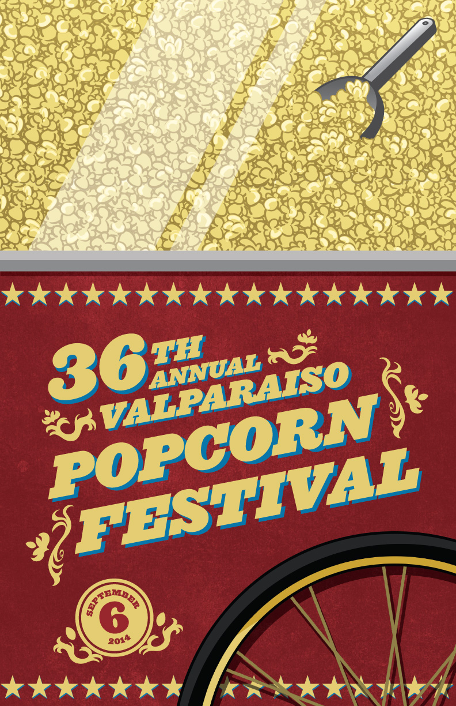

POPCORN FESITVAL
Print
While typically not a fan of skeuomorphism, I liked the idea of recreating a carnival styled wheeled popcorn machine for this poster design. The traditional bright colors added a sense of energy and style to help make it instantly eye catching.
